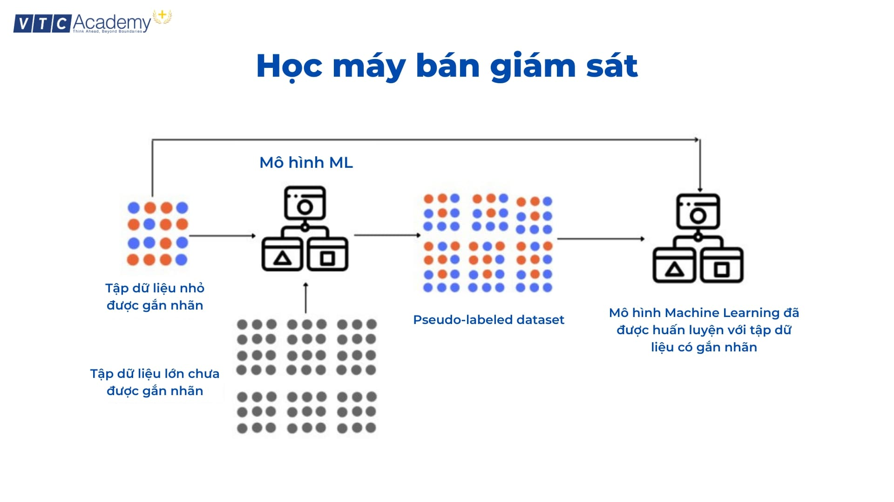

Giới thiệu về Học máy cho người mới bắt đầu: Từ lý thuyết đến thực hành
I. Học máy (Machine Learning) là gì?
1. Định nghĩa và khái niệm cốt lõi
**Học máy (Machine Learning - ML)** là một lĩnh vực của trí tuệ nhân tạo (AI) tập trung vào việc sử dụng dữ liệu và thuật toán để cho phép máy tính "học" và cải thiện hiệu suất của chúng theo thời gian mà không cần được lập trình một cách tường minh. Thay vì viết ra các quy tắc cụ thể để giải quyết một vấn đề, chúng ta cung cấp cho máy tính một lượng lớn **dữ liệu (data)** và để nó tự tìm ra các **mẫu (patterns)** và quy luật ẩn sau dữ liệu đó.
Khái niệm cốt lõi của ML là **mô hình (model)**. Mô hình là một cấu trúc toán học được "huấn luyện" (train) trên dữ liệu. Quá trình huấn luyện này bao gồm việc điều chỉnh các tham số nội tại của mô hình để nó có thể thực hiện một tác vụ cụ thể, chẳng hạn như **phân loại (classification)** email là spam hay không, hoặc **dự đoán (prediction)** giá cổ phiếu vào ngày mai.
2. Tại sao Học máy lại quan trọng?
Học máy đang cách mạng hóa mọi ngành công nghiệp, từ y tế, tài chính đến giải trí. Nó là công nghệ đằng sau xe tự lái, trợ lý ảo (như Siri, Alexa), hệ thống gợi ý sản phẩm của Amazon và Netflix, và các công cụ dịch thuật tự động. Sức mạnh của ML nằm ở khả năng xử lý và phân tích các tập dữ liệu khổng lồ và phức tạp mà con người không thể làm được.
Đối với doanh nghiệp, ML giúp **tối ưu hóa hoạt động**, **cá nhân hóa trải nghiệm khách hàng**, và **đưa ra các quyết định kinh doanh thông minh hơn** dựa trên dữ liệu. Việc hiểu và áp dụng ML không còn là một lợi thế cạnh tranh mà đang dần trở thành một yêu cầu bắt buộc để tồn tại và phát triển trong kỷ nguyên số.
II. Các loại hình Học máy phổ biến
1. Học có giám sát (Supervised Learning)
Đây là loại hình ML phổ biến nhất. Trong học có giám sát, chúng ta cung cấp cho mô hình **dữ liệu đã được gán nhãn (labeled data)**. Điều này có nghĩa là mỗi điểm dữ liệu đầu vào đều đi kèm với một kết quả đầu ra mong muốn. Ví dụ, để huấn luyện một mô hình nhận dạng mèo, chúng ta cần cung cấp hàng ngàn bức ảnh, mỗi bức ảnh được gán nhãn là "mèo" hoặc "không phải mèo".
Mục tiêu của mô hình là học được mối quan hệ giữa đầu vào và đầu ra để có thể dự đoán chính xác đầu ra cho các dữ liệu mới chưa từng thấy. Các bài toán phổ biến bao gồm **phân loại** (ví dụ: phân loại email) và **hồi quy (regression)** (ví dụ: dự đoán giá nhà).
2. Học không giám sát (Unsupervised Learning)
Trái ngược với học có giám sát, trong học không giám sát, chúng ta làm việc với **dữ liệu không được gán nhãn (unlabeled data)**. Mô hình phải tự mình khám phá các cấu trúc và mẫu tiềm ẩn trong dữ liệu.
Các ứng dụng chính của học không giám sát bao gồm **phân cụm (clustering)**, tức là nhóm các điểm dữ liệu tương tự nhau lại thành các cụm (ví dụ: phân khúc khách hàng dựa trên hành vi mua sắm), và **giảm chiều dữ liệu (dimensionality reduction)**, giúp đơn giản hóa dữ liệu mà không làm mất nhiều thông tin quan trọng.
3. Học tăng cường (Reinforcement Learning)
Học tăng cường là một lĩnh vực hấp dẫn, lấy cảm hứng từ cách con người và động vật học hỏi từ môi trường. Trong RL, một **tác nhân (agent)** học cách hành xử trong một **môi trường (environment)** bằng cách thực hiện các **hành động (actions)** và nhận lại **phần thưởng (rewards)** hoặc **hình phạt (penalties)**.
Mục tiêu của tác nhân là tối đa hóa tổng phần thưởng nhận được theo thời gian. Học tăng cường là công nghệ cốt lõi đằng sau các hệ thống chơi game (như AlphaGo của Google), robot tự hành và các hệ thống điều khiển tối ưu.
III. Bắt đầu với Học máy như thế nào?
1. Ngôn ngữ lập trình và công cụ cần thiết
**Python** là ngôn ngữ thống trị trong lĩnh vực Học máy nhờ cú pháp đơn giản và một hệ sinh thái thư viện mạnh mẽ. Các thư viện bạn cần làm quen bao gồm:
- NumPy: Cho các phép toán số học hiệu suất cao.
- Pandas: Để xử lý và phân tích dữ liệu dạng bảng.
- Matplotlib & Seaborn: Để trực quan hóa dữ liệu.
- Scikit-learn: Cung cấp một bộ sưu tập lớn các thuật toán ML cổ điển.
- TensorFlow & PyTorch: Các framework mạnh mẽ cho Học sâu (Deep Learning).
2. Các bước trong một dự án Học máy
Một dự án ML điển hình thường bao gồm các bước sau:
- Thu thập dữ liệu (Data Collection): Tìm kiếm và thu thập dữ liệu liên quan đến bài toán.
- Tiền xử lý dữ liệu (Data Preprocessing): Làm sạch, xử lý các giá trị thiếu, và chuyển đổi dữ liệu về định dạng phù hợp cho mô hình. Đây thường là bước tốn nhiều thời gian nhất.
- Lựa chọn mô hình (Model Selection): Chọn một hoặc vài thuật toán ML phù hợp với bài toán.
- Huấn luyện mô hình (Model Training): Sử dụng dữ liệu đã xử lý để huấn luyện mô hình.
- Đánh giá mô hình (Model Evaluation): Sử dụng một tập dữ liệu riêng (tập kiểm tra) để đánh giá hiệu suất của mô hình.
- Tinh chỉnh tham số (Parameter Tuning): Tối ưu hóa các tham số của mô hình để cải thiện hiệu suất.
- Triển khai (Deployment): Đưa mô hình vào sử dụng trong môi trường thực tế.
3. Ví dụ đơn giản: Dự đoán giá nhà
Hãy tưởng tượng bạn có một tập dữ liệu về giá nhà, bao gồm các thông tin như diện tích, số phòng ngủ, vị trí, và giá bán. Đây là một bài toán **hồi quy** trong **học có giám sát**.
Bạn sẽ sử dụng các thư viện như Pandas để tải và khám phá dữ liệu. Sau đó, bạn có thể chọn một mô hình hồi quy tuyến tính (Linear Regression) từ Scikit-learn. Bạn sẽ chia dữ liệu thành tập huấn luyện và tập kiểm tra. Mô hình sẽ "học" mối quan hệ giữa diện tích, số phòng ngủ, vị trí và giá bán từ tập huấn luyện. Cuối cùng, bạn dùng tập kiểm tra để xem mô hình dự đoán giá nhà chính xác đến mức nào.